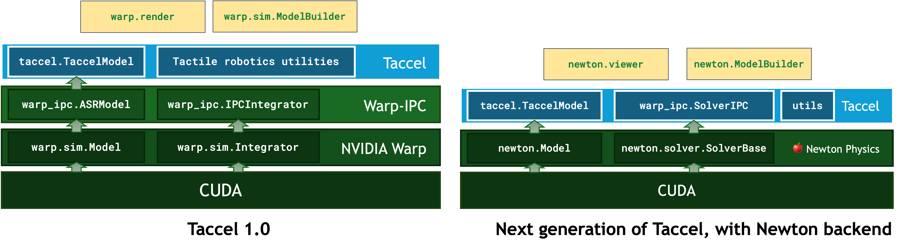
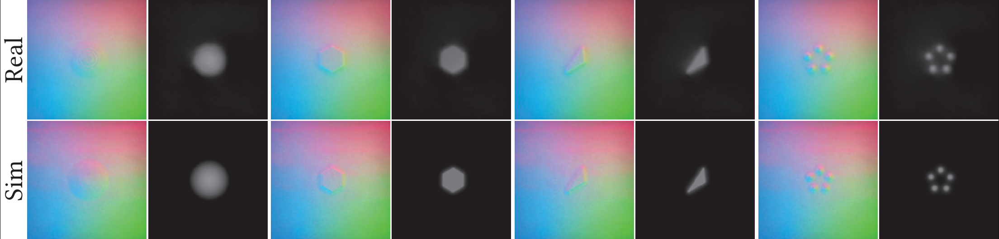

Supercharging Tactile Robotics Simulation with NVIDIA Warp and Newton¶
The ability to perceive and interact with the world through touch is fundamental to human-level interaction skills with the physical world. A robust sense of touch is indispensable for robots to achieve similar capabilities. Vision-based tactile sensors (VBTSs) have emerged as a leading technology in this domain, offering high-resolution feedback at a relatively low cost.
VBTSs typically employ a camera to observe the deformation of an elastic gel pad, allowing the robots to “feel” subtle changes in contact and pressure. However, this very property that makes VBTSs so powerful—the soft, deformable nature of the gel pads—also makes them incredibly complex to simulate accurately and efficiently. The intricate physics of soft body deformation, contact mechanics, and the subsequent generation of realistic tactile imagery present significant computational hurdles. The lack of high-fidelity and user-friendly simulators, particularly those employing Finite Element Methods (FEM) for an accurate representation of these soft bodies, has been a major bottleneck, slowing down the pace of research and development in tactile robotics.
To fill these gaps, a collaboration between CoRe Lab, Peking University, and AIVC Lab, UCLA, yields a GPU-based physics simulator, Taccel (pronounced as “taxel”). Taccel is a high-performance simulation platform curated for simulating VBTSs and diverse robots integrated with these sensors. Taccel was initially built on NVIDIA warp.sim module and is now being migrated to its official successor, the Newton Physics. These powerful frameworks allow the project to leverage a rich ecosystem of GPU-based toolkits for advanced research and development in robotics simulation. Boosted by NVIDIA Warp and CUDA-X, Taccel aims to bridge the gap by providing an accurate and scalable simulation environment, while providing user-friendly Python APIs for researchers, accelerating innovation in how robots learn to touch and interact with their surroundings.
Behind Taccel: The NVIDIA Warp-implemented IPC Solver for NVIDIA Warp and Newton¶
The remarkable performance of Taccel, especially its ability to handle dense and precise computations for complex body dynamics and contact in massively parallel environments, is heavily reliant on cutting-edge GPU computing. Researchers from the AIVC Lab have developed the Warp-IPC, a physics simulation engine combining the Affine-Body Dynamics (ABD) and Incremental Potential Contact (IPC) algorithms for solid material and robot simulation.
Movie 1: Taccel simulating a RobotiQ-3F with soft gel pads grasping and lifting a soft teddy bear.
Writing efficient, parallelized code for sophisticated physics simulations like IPC is a demanding task. This is where NVIDIA Warp plays a pivotal role. Taccel leverages NVIDIA Warp, a Python framework that allows developers to write high-performance simulation and graphics code that is just-in-time compiled to highly optimized CUDA kernels for NVIDIA AI infrastructure. This allows us to develop complex physics within a productive Python environment while achieving the raw performance of low-level GPU programming.
The CUDA programming model, accessed via NVIDIA Warp and Newton, unlocks the massive parallelism inherent in NVIDIA GPUs, along with rich tools for spatial computing. Taccel exploits them to simulate thousands of independent simulation environments simultaneously, each with unprecedented precision. The core computations within IPC and ABD (like solving large linear systems during optimization iterations) are offloaded to the GPU, drastically reducing the time per simulation step. This GPU acceleration is fundamental to Taccel achieving its high speeds and large-scale parallelization capabilities.

Figure 2: Infrastructure of Taccel, including the warp.sim-based infra in the initial version and the target infra for Newton-based infra in the future releaseThe Warp-IPC contributes to the broader NVIDIA Warp and Newton ecosystem for general robotics simulation purpose, providing a brand-new solver that focuses on precision. It leverages the strong user-defined extensibility of warp and Newton, which allows powerful third-party solvers to enter the game. As illustrated in Figure 2, Warp-IPC is implemented following the disentangled model-integrator infrastructure, either in its initial release based on warp.sim, or the future version based on Newton Physics. The Model instance holds data for affine bodies, soft bodies, and the robot links that represent the simulation scene. The IPCIntegrator (SolverIPC in the Newton-based version) is responsible for performing time stepping on the model instance using the ABD and IPC algorithms. Additional utilities curated for tactile robotics are also provided for tactile robotics and soft robotics research. This architecture ensures compatibility with the NVIDIA Warp and Newton framework while holding the potential for further adaptation to NVIDIA’s Newton framework for more powerful facilities for robotics research.
Precise and Scalable Robot Simulation with Taccel¶
Taccel is engineered from the ground up to deliver on precision in physics and tactile signal synthesis, unprecedented simulation scalability, and flexibility in configuration and use.

Figure 3: Taccel integrates IPC and ABD implemented with NVIDIA Warp for precise and efficient simulation, and provides user-friendly APIs for flexibly setting up simulation scenes.
Physical accuracy is paramount for meaningful tactile simulation. At its core, Taccel integrates two pioneering simulation techniques: Incremental Potential Contact (IPC) and Affine Body Dynamics (ABD) for efficiently and accurately modeling soft and stiff bodies for representing robot links, sensor gel pads, objects, as well as solving their diverse interactions. For the soft gel pads, IPC guarantees inversion-free and intersection-free states. For stiffer materials, such as robot links or manipulated objects, ABD provides an efficient and precise simulation approach that fits in the IPC simulation framework. This ensures stable and physically realistic behavior in complex contact scenarios like the bolt-and-nut assembly shown in Movie 2.
Movie 2: Bolt-and-nut, showcasing Taccel’s precise contact handling
Taccel doesn’t just simulate the physics; it also generates high-fidelity tactile signals, as shown in Figure 3. It can produce detailed depth maps from the simulated deformation of the gel surface and generate high-fidelity RGB tactile images and marker flows for tactile perception. The synthetic tactile data can be useful for generating synthetic tactile data and simulating tactile-informed robotic manipulation.

Figure 1: Taccel generates realistic simulated tactile signals
Supported by the precision in physics and tactile signal simulation, Taccel excels in simulating complex, contact-rich manipulation tasks. As shown in Movie 3-4, the researchers have tested the Tac-Man framework for manipulating articulated objects like drawers (prismatic joints), microwave ovens (revolute joints), e.t.c. In the sim-real comparison, Taccel accurately simulates the crucial gel pad deformation and contact dynamics, leading to execution-recovery patterns that closely match real-world trajectories, a significant step forward in achieving high-fidelity simulation in tactile robotics.
Movie 3: Real-world execution versus Taccel simulation for Tac-Man manipulation reveals small sim-real gap
Movie 4: More Tac-Man simulation on cabinets, drawers, and bolt-nut assemblies.
One of Taccel’s most significant advancements is its massive scalability, enabling large-scale experiments that were previously intractable. In a peg-insertion task with dual tactile pads shown in Movie 5, Taccel can fit over 4096 parallel environments running on a single 80 GB GRAM. This translates to an incredible 900+ FPS (18-fold acceleration over real-world wall-clock time) in the test. This capability is crucial for training reinforcement learning agents that require vast amounts of simulation experience.
Movie 5: 4096 Peg Insertion Video, demonstrating massive parallelization
Taccel in Action: Flexible and User-friendly APIs¶
Taccel is designed to be adaptable to a wide array of research needs. It provides intuitive Python APIs, allowing users to easily load robots from URDF files, configure sensors, and define object properties. Interaction with the simulation, such as setting kinematic targets, can be done using familiar formats like NumPy arrays or PyTorch tensors. Leveraging the NVIDIA Warp and Newton framework, Taccel seamlessly integrates advanced functions such as ray-tracing, OpenGL-based visualization, and USD-based rendering, enriching the simulation experience. Further, Taccel supports a broad spectrum of robotic platforms and sensor arrangements, from simple parallel grippers to complex multi-fingered hands equipped with numerous tactile sensors as shown in Movie 6.
Movie 6: Various robots and VBTS integration supported in Taccel
Conclusion¶
Taccel represents a step forward in vision-based tactile robotics simulation powered by NVIDIA Warp and Newton Physics Engine. By combining advanced physics modeling algorithms like IPC and ABD with a highly optimized GPU implementation leveraging NVIDIA Warp, Taccel offers a unique blend of precision, scalability, and flexibility. This empowers researchers to tackle more complex problems, generate vast datasets for learning, and rapidly iterate on robot and sensor designs. The roles of NVIDIA AI infrastructure and innovative frameworks like NVIDIA Warp are crucial enablers for the level of performance and scale that Taccel achieves.
See Also¶
NVIDIA Warp: Developer Page and Docs
Newton Physics: Developer Page and Docs
Robot Learning and Simulation with Isaac Lab and Newton Physics
References¶
Li Y, Du W, Yu C, et al. Taccel: Scaling Up Vision-based Tactile Robotics via High-performance GPU Simulation[J]. arXiv preprint arXiv:2504.12908, 2025.
Li, Minchen, et al. “Incremental potential contact: intersection-and inversion-free, large-deformation dynamics.” ACM Trans. Graph. 39.4 (2020): 49.
Lan, Lei, et al. “Affine body dynamics: fast, stable and intersection-free simulation of stiff materials.” ACM Transactions on Graphics (TOG) 41.4 (2022): 1-14.
Huang, Kemeng, et al. “StiffGIPC: Advancing GPU IPC for Stiff Affine-Deformable Simulation.” ACM Transactions on Graphics (2025).
Macklin, Miles. “Warp: Differentiable Spatial Computing for Python.” ACM SIGGRAPH 2024 Courses. 2024. 1-147.
Zhao, Zihang, et al. “Tac-Man: Tactile-informed prior-free manipulation of articulated objects.” IEEE Transactions on Robotics (2024).
Zhao, Zihang, et al. “Embedding high-resolution touch across robotic hands enables adaptive human-like grasping.” Nature Machine Intelligence (2025): 1-12.
Du, Wenxin, et al. “TacIPC: Intersection-and Inversion-Free FEM-Based Elastomer Simulation for Optical Tactile Sensors.” IEEE Robotics and Automation Letters 9.3 (2024): 2559-2566.
Chen, Yunuo, et al. “A unified newton barrier method for multibody dynamics.” ACM Transactions on Graphics (TOG) 41.4 (2022): 1-14.